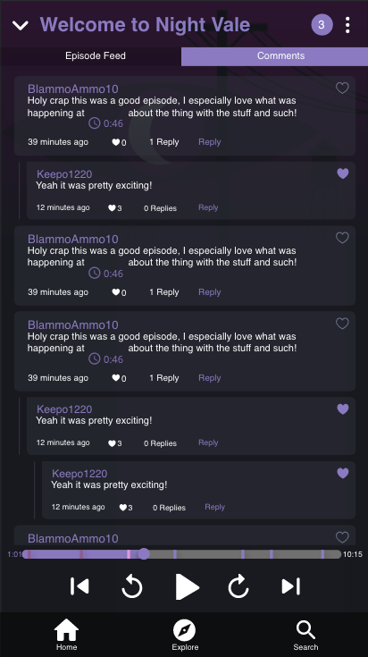

Social Podcast
Course: Media Technology and Interaction Design.
Challenge
Social interaction is often missing in podcast applications, both between listeners and between listeners and creators.
User Participation: It should be easy to share content directly in the listening flow and enable discussion without leaving the app.
Creator Context: Creators need a way to connect references and updates to specific episode moments instead of directing users to external social channels.
My Role
This was a group project. I worked with research synthesis, interaction design, and interactive prototyping. I helped define user goals and feature requirements, designed timestamp-based user flows, and iterated the concept based on feedback from reviews and user testing.
Process
Discover: We used heuristic evaluation, user observation, and analysis of podcast app reviews to identify core pain points in social interaction and content sharing.
Define: We clarified user goals and design requirements, then developed personas and scenarios based on a questionnaire with 60+ responses.
Develop: We progressed from sketches to digital concepts in Adobe XD and refined key interactions through parallel prototyping, design reviews, mockups, and usability testing.
Deliver: We finalized and presented a high-fidelity prototype that combined listening, timestamped interaction, and creator-user dialogue in one coherent experience.
Delivery & Impact
Timestamped Content Sharing: Creators can attach show notes and references to exact moments in an episode, improving context and relevance.
In-Episode Discussion: Users can comment on specific timestamps and engage in focused conversations around what is being said.
Social Engagement Layer: Likes and replies support lightweight social interaction without interrupting the listening experience.
Playback-Linked Feed: Episode feed content updates with playback progress so users see the right references at the right time.
Evidence-Based Concept: The direction was grounded in 60+ survey responses and iterative prototype feedback.